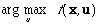

Reinforcement Learning with high-dimensional continuous actions
Technical Report WL-TR-93-1147, Wright Laboratory, Wright-Patterson Air Force Base, 1993 (HTML - )
Abstract: Many reinforcement learning systems, such as Q-learning (Watkins, 1989), or advantage updating (Baird, 1993), require that a function f(x,u) be learned, and that the value of  be calculated quickly for any given x. The function f could be learned by a function approximation system such as a multilayer perceptron, but the maximum of f for a given x cannot be found analytically and is difficult to approximate numerically for high-dimensional u vectors. A new method is proposed, wire fitting, in which a function approximation system is used to learn a set of functions called control wires, and the function f is found by fitting a surface to the control wires. Wire fitting has the following four properties: (1) any continuous f function can be represented to any desired accuracy given sufficient parameters; (2) the function f(x,u) can be evaluated quickly; (3) can be found exactly in constant time after evaluating f(x,u); (4) wire fitting can incorporate any general function approximation system. These four properties are discussed and it is shown how wire fitting can be combined with a memory-based learning system and Q-learning to control an inverted-pendulum system.
Key words: reinforcement learning, wire fitting, maximization, Q-learning, advantage updating